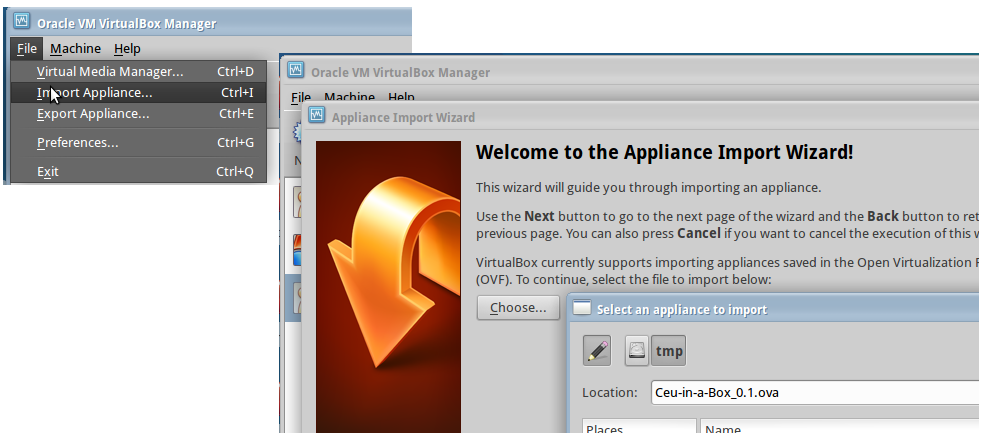

Céu in a Box (CiB) is a distribution of Xubuntu that comes pre-installed with Céu.
The distribution contains the compiler together with bindings for the environments Arduino, libuv, and SDL.
CiB is distributed as a single .ova file to be used with VirtualBox.
After downloading CiB, import it to VirtualBox:

The usename and password for CiB are both ceu:
Username: ceu
Password: ceuAfter logging in, open a terminal window and type the following commands to check if everything is ok:
$ cd ceu/ceu/tst
$ ./runThe directory structure of CiB is as follows:
- /home/ceu/ # home dir for the user "ceu"
- arduino-1.8.1/ # distribution from http://arduino.cc
- ceu/
- ceu/ # clone of http://github.com/fsantanna/ceu/
- ceu-arduino/ # clone of http://github.com/fsantanna/ceu-arduino/
- ceu-libuv/ # clone of http://github.com/fsantanna/ceu-libuv/
- ceu-sdl/ # clone of http://github.com/fsantanna/ceu-sdl/$ cd ~/ceu/ceu/
$ git pull
$ make
$ sudo make install
$ cd ~/ceu/ceu-arduino/
$ git pull
$ cd ~/ceu/ceu-libuv/
$ git pull
$ cd ~/ceu/ceu-sdl/
$ git pull